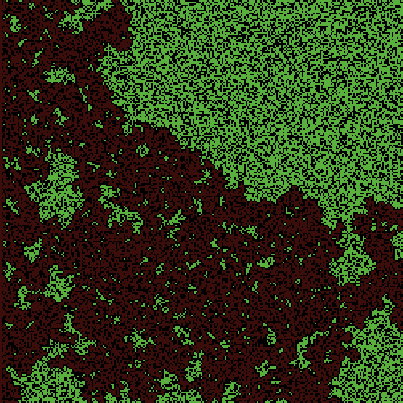

Fire: prag gustine šume
Jedno pravilo širenja i jedan parametar. Ispod gustine od oko 59% požar zastane, iznad nje pređe šumu; na samom pragu ishod se najviše razlikuje od pokretanja do pokretanja.
Model iz biblioteke NetLoga korak po korak: pravila, kod u NetLogu i C#, šta se mjeri, rezultati iz NetLoga i tumačenje.
Za promjenu slajda koristite strelice ← → ili dugmad pri dnu. Opcija „Čitanje“ prikazuje sve slajdove na jednoj stranici.
Parcela je drvo ili prazno tlo; vatra prelazi samo na četiri susjeda
Svijet je 251 × 251 parcela (patches) i ne omotava se: požar ne prelazi preko ivice. Vjetra nema, a drvo izgori samo jednom.
1 šuma
Svaka parcela postane drvo (zelena) s vjerovatnoćom density%. Raspored je slučajan i drugačiji u svakom pokretanju.
2 iskra
Na početku gori cijela lijeva kolona, bez obzira na to ima li na parceli drvo.
3 širenje
U svakom ticku vatra zapali zeleno drvo gore, dolje, lijevo i desno od sebe. Dijagonalni susjedi se ne računaju.
4 žar i kraj
Vatra postane žar (breed embers), koji tamni i nakon 12 tickova nestane. Kada nema nijedne turtle, model staje.
- Dvije vrste turtles: fires (prednja ivica požara) i embers (žar iza nje). Parcela pamti samo boju: zelena je drvo, crna prazno tlo ili izgorjelo drvo.
- Vatra se ne gasi slučajno i ne preskače prazninu: požar ide dalje samo ako postoji neprekinut put od drveta do drveta.
go, ignite i fade-embers: cijelo ponašanje modela
Kod je iz modela u biblioteci NetLoga (Fire, Uri Wilensky, 1997), skraćen samo za komentare. C# je napisan u stilu biblioteke MiniNetLogo s kursa.
breed [ fires fire ] ; prednja ivica požara
breed [ embers ember ] ; žar koji tamni
to go
if not any? turtles [ stop ]
ask fires [
ask neighbors4 with [ pcolor = green ]
[ ignite ]
set breed embers
]
fade-embers
tick
end
to ignite ; procedura parcele
sprout-fires 1 [ set color red ]
set pcolor black
set burned-trees burned-trees + 1
end
to fade-embers
ask embers [
set color color - 0.3
if color < red - 3.5 [ set pcolor color die ]
]
endclass Fire : Turtle { } // breed [ fires fire ]
class Ember : Turtle { public double Shade = 15; } // red = 15
static IEnumerable<Fire> fires => World.Turtles.OfType<Fire>();
static IEnumerable<Ember> embers => World.Turtles.OfType<Ember>();
static bool Go()
{
if (!World.Turtles.Any()) return false; // stop
World.Ask(fires, f =>
{
World.Ask(f.PatchHere.Neighbors4
.With(n => n.Pcolor == Green), Ignite);
f.PatchHere.Sprout<Ember>(1); // set breed embers:
f.Die(); // u C# klasa se ne mijenja
});
FadeEmbers();
World.Tick();
return true;
}
static void Ignite(Patch p)
{
p.Sprout<Fire>(1, f => f.Color = Red);
p.Pcolor = Black;
burnedTrees++;
}
static void FadeEmbers() => World.Ask(embers, e =>
{
e.Shade -= 0.3;
if (e.Shade < 15 - 3.5) { e.Pcolor = Red; e.Die(); } // tamnocrvena
});Vatra koja nastane u toku ask fires ne dolazi na red u istom ticku (ask radi nad kopijom skupa), pa se požar pomjera jednu parcelu po ticku. Isto važi za World.Ask u C#.
Jedan parametar, tri mjere na kraju pokretanja
Mijenja se samo density; sve ostalo je kao u modelu. Pokretanje traje dok se ne ugasi posljednji žar.
izgorjelo (%)
Udio izgorjelih stabala: burned-trees / initial-trees * 100. Ista mjera kao u prezentaciji v02a. Brojač uključuje i 251 parcelu lijeve kolone, pa ni pri maloj gustini nije nula.
stigao do desne ivice (da/ne)
Je li izgorjela ijedna parcela u posljednjoj koloni. To je pitanje perkolacije: postoji li neprekinut put kroz šumu.
trajanje (tickovi)
Broj tickova do kraja pokretanja, uključujući i gašenje posljednjeg žara.
<experiment name="kriva" repetitions="20"
sequentialRunOrder="true"
runMetricsEveryStep="false" timeLimit="5000">
<setup>setup</setup> <go>go</go>
<metric>burned-trees / initial-trees * 100</metric>
<metric>any? patches with [ pxcor = max-pxcor
and shade-of? pcolor red ]</metric>
<metric>ticks</metric>
<!-- density = 50, 51, …, 70 -->
</experiment>double izgorjelo = burnedTrees * 100.0 / initialTrees;
bool stigao = World.Patches.Any(p =>
p.Pxcor == World.MaxPxcor && p.Pcolor == Red);
int trajanje = World.Ticks;Izgorjela parcela na kraju ima boju ugašenog žara (nijansa crvene), neizgorjelo drvo je zeleno, a prazno tlo crno.
Između 57% i 61% gustine ishod se mijenja iz „zastane“ u „pređe“
21 gustina × 10 pokretanja (vrijednosti iz prezentacije v02a, slajd 24 i Prilog 2). Linija je prosjek, a pojas raspon među pokretanjima.


Na pragu ishod pojedinačnog pokretanja nije predvidiv
Raspodjela izgorjelog dijela šume u 100 pokretanja po gustini. Izaberite gustinu.
Prosjek na pragu malo govori
Vjerovatnoća prelaska skoči u uskom pojasu, a požar tu traje najduže
21 gustina × 20 pokretanja (novo mjerenje za ovu mini-prezentaciju). Lijevo: koliko pokretanja je stiglo do desne ivice. Desno: trajanje, medijan i raspon.
Stigao do desne ivice (od 20)
Trajanje požara (tickovi)
Prag perkolacije: mala promjena parametra, kvalitativno drugi ishod
Fire je primjer faznog prelaza. Pravila su lokalna (četiri susjeda), a ishod zavisi od toga postoji li put kroz cijelu šumu.
Zašto prag postoji
Ispod praga stabla čine odvojene grupe; požar izgori grupu u kojoj je počeo i stane. Iznad praga jedna grupa povezuje lijevu i desnu ivicu. Teorija perkolacije za kvadratnu mrežu s četiri susjeda daje prag od oko 59,3% (Stauffer i Aharony, 1994), što se slaže s izmjerenim.
Zašto je rasipanje najveće na pragu
Daleko od praga ishod određuje gustina. Na pragu ga određuje slučajan raspored stabala: jedna praznina na pravom mjestu prekine put. Zato se isti parametar ponaša kao dva različita scenarija.
Šta to znači za vaš model
- Parametar se ispituje u nizu vrijednosti, a ne u jednoj tački.
- Blizu praga treba više pokretanja i raspon, ne samo prosjek.
- „Nema efekta“ i „ogroman efekat“ mogu biti dvije tačke iste krive.
Ograničenje modela
Model nema vjetar, vlagu, teren ni gašenje. Tvrdi samo to da lokalno širenje kroz slučajno raspoređena stabla ima prag; ne predviđa nijedan stvarni požar.
Model u NetLogu i samostalna vježba
Šta isprobati
- Pokrenite model pet puta na gustini 59% i zapišite izgorjeli procenat. Koliko se vrijednosti razlikuju?
- Zamijenite
neighbors4saneighbors(osam susjeda). Prije pokretanja zapišite: pomjera li se prag naviše ili naniže? - Dodajte vjerovatnoću da se drvo zapali, npr.
if random-float 1 < 0.8 [ ignite ]. Kako se mijenja prag?
Samostalna vježba
U BehaviorSpace napravite eksperiment za gustine 55–65 s 20 pokretanja i mjerom burned-trees / initial-trees * 100. Nacrtajte prosjek i raspon. Na kojoj gustini je raspon najveći?
Brojke na slajdu 5 su iz prezentacije v02a (NetLogo 7.0.4 headless, 10 pokretanja po gustini). Brojke na slajdovima 6 i 7 su novo mjerenje istim NetLogom: 100 pokretanja po gustini (57, 59, 61) i 21 gustina × 20 pokretanja. Simulacija na slajdu 1 je ilustracija u web pregledniku. Modeliranje i simulacije, FIT UNMO, 2026/27.